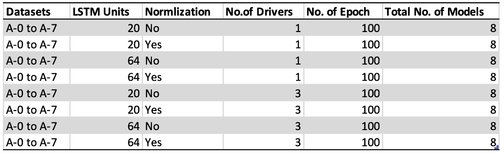

Enhancing Driver Behavior Learning: Study on Feature Grouping and Combination


We introduce a innovative way to categorize and combine car monitoring system data using engineering design concepts to improve driver behaviour prediction model accuracy. Autonomous driving is one of the most promising industry in travel and transportation. Environmental perception modules are playing crucial roles in automatic driving system and driving behaviour prediction. The modules use various type of sensors to construct the perception of real-time road environment. The popular sensors used includes ultrasonic radar systems, LiDAR, cameras, and internal vehicle SCADA. As a result, sensory systems are directly liable for the quality of collected data which could affect the performance of a driving behaviour prediction system. Our approach enables us to assess the significance of each group of data features on the driver learning behavior prediction model’s success, with a stronger emphasis on engineering considerations rather than being constrained by the limitations or capabilities of specific sensors.
We categorized the 123 collected features in our studies into 7 categories:
Based on the eight developed data feature categories, we proceeded to combine different combinations of these categories to create new datasets with reduced dimensions.

A total of 72 of data sets were prepareed for 3 models for training:
All training was conducted on a GeForce RTX 2070 (8 GB) GPU with a total training time of approximately 27 hours.